Last updated: 2022-02-28
Checks: 6 1
Knit directory: cTWAS_analysis/
This reproducible R Markdown analysis was created with workflowr (version 1.6.2). The Checks tab describes the reproducibility checks that were applied when the results were created. The Past versions tab lists the development history.
Great! Since the R Markdown file has been committed to the Git repository, you know the exact version of the code that produced these results.
Great job! The global environment was empty. Objects defined in the global environment can affect the analysis in your R Markdown file in unknown ways. For reproduciblity it’s best to always run the code in an empty environment.
The command set.seed(20211220) was run prior to running the code in the R Markdown file. Setting a seed ensures that any results that rely on randomness, e.g. subsampling or permutations, are reproducible.
Great job! Recording the operating system, R version, and package versions is critical for reproducibility.
Nice! There were no cached chunks for this analysis, so you can be confident that you successfully produced the results during this run.
Using absolute paths to the files within your workflowr project makes it difficult for you and others to run your code on a different machine. Change the absolute path(s) below to the suggested relative path(s) to make your code more reproducible.
| absolute | relative |
|---|---|
| /project2/xinhe/shengqian/cTWAS/cTWAS_analysis/data/ | data |
| /project2/xinhe/shengqian/cTWAS/cTWAS_analysis/code/ctwas_config.R | code/ctwas_config.R |
Great! You are using Git for version control. Tracking code development and connecting the code version to the results is critical for reproducibility.
The results in this page were generated with repository version 4dd47fb. See the Past versions tab to see a history of the changes made to the R Markdown and HTML files.
Note that you need to be careful to ensure that all relevant files for the analysis have been committed to Git prior to generating the results (you can use wflow_publish or wflow_git_commit). workflowr only checks the R Markdown file, but you know if there are other scripts or data files that it depends on. Below is the status of the Git repository when the results were generated:
Ignored files:
Ignored: .ipynb_checkpoints/
Ignored: data/AF/
Untracked files:
Untracked: Rplot.png
Untracked: analysis/.ipynb_checkpoints/
Untracked: analysis/Autism_Brain_Amygdala.Rmd
Untracked: analysis/Autism_Brain_Anterior_cingulate_cortex_BA24.Rmd
Untracked: analysis/Autism_Brain_Caudate_basal_ganglia.Rmd
Untracked: analysis/Autism_Brain_Cerebellar_Hemisphere.Rmd
Untracked: analysis/Autism_Brain_Cerebellum.Rmd
Untracked: analysis/Autism_Brain_Cortex.Rmd
Untracked: analysis/Autism_Brain_Frontal_Cortex_BA9.Rmd
Untracked: analysis/Autism_Brain_Hippocampus.Rmd
Untracked: analysis/Autism_Brain_Hypothalamus.Rmd
Untracked: analysis/Autism_Brain_Nucleus_accumbens_basal_ganglia.Rmd
Untracked: analysis/Autism_Brain_Putamen_basal_ganglia.Rmd
Untracked: analysis/Autism_Brain_Spinal_cord_cervical_c-1.Rmd
Untracked: analysis/Autism_Brain_Substantia_nigra.Rmd
Untracked: analysis/Glucose_Adipose_Subcutaneous.Rmd
Untracked: analysis/Glucose_Adipose_Visceral_Omentum.Rmd
Untracked: analysis/Splicing_Test.Rmd
Untracked: code/.ipynb_checkpoints/
Untracked: code/AF_out/
Untracked: code/Autism_out/
Untracked: code/BMI_S_out/
Untracked: code/BMI_out/
Untracked: code/Glucose_out/
Untracked: code/LDL_S_out/
Untracked: code/SCZ_out/
Untracked: code/T2D_out/
Untracked: code/ctwas_config.R
Untracked: code/mapping.R
Untracked: code/out/
Untracked: code/run_AF_analysis.sbatch
Untracked: code/run_AF_analysis.sh
Untracked: code/run_AF_ctwas_rss_LDR.R
Untracked: code/run_Autism_analysis.sbatch
Untracked: code/run_Autism_analysis.sh
Untracked: code/run_Autism_ctwas_rss_LDR.R
Untracked: code/run_BMI_analysis.sbatch
Untracked: code/run_BMI_analysis.sh
Untracked: code/run_BMI_analysis_S.sbatch
Untracked: code/run_BMI_analysis_S.sh
Untracked: code/run_BMI_ctwas_rss_LDR.R
Untracked: code/run_BMI_ctwas_rss_LDR_S.R
Untracked: code/run_Glucose_analysis.sbatch
Untracked: code/run_Glucose_analysis.sh
Untracked: code/run_Glucose_ctwas_rss_LDR.R
Untracked: code/run_LDL_analysis_S.sbatch
Untracked: code/run_LDL_analysis_S.sh
Untracked: code/run_LDL_ctwas_rss_LDR_S.R
Untracked: code/run_SCZ_analysis.sbatch
Untracked: code/run_SCZ_analysis.sh
Untracked: code/run_SCZ_ctwas_rss_LDR.R
Untracked: code/run_T2D_analysis.sbatch
Untracked: code/run_T2D_analysis.sh
Untracked: code/run_T2D_ctwas_rss_LDR.R
Untracked: data/.ipynb_checkpoints/
Untracked: data/Autism/
Untracked: data/BMI/
Untracked: data/BMI_S/
Untracked: data/Glucose/
Untracked: data/LDL_S/
Untracked: data/SCZ/
Untracked: data/T2D/
Untracked: data/TEST/
Untracked: data/UKBB/
Untracked: data/UKBB_SNPs_Info.text
Untracked: data/gene_OMIM.txt
Untracked: data/gene_pip_0.8.txt
Untracked: data/mashr_Heart_Atrial_Appendage.db
Untracked: data/mashr_sqtl/
Untracked: data/summary_known_genes_annotations.xlsx
Untracked: data/untitled.txt
Unstaged changes:
Modified: analysis/BMI_Brain_Amygdala_S.Rmd
Modified: analysis/BMI_Brain_Anterior_cingulate_cortex_BA24_S.Rmd
Modified: analysis/BMI_Brain_Caudate_basal_ganglia_S.Rmd
Modified: analysis/BMI_Brain_Cerebellar_Hemisphere_S.Rmd
Modified: analysis/BMI_Brain_Cerebellum_S.Rmd
Modified: analysis/BMI_Brain_Cortex.Rmd
Modified: analysis/BMI_Brain_Cortex_S.Rmd
Modified: analysis/BMI_Brain_Frontal_Cortex_BA9_S.Rmd
Modified: analysis/BMI_Brain_Hippocampus_S.Rmd
Modified: analysis/BMI_Brain_Hypothalamus_S.Rmd
Modified: analysis/BMI_Brain_Nucleus_accumbens_basal_ganglia_S.Rmd
Modified: analysis/BMI_Brain_Putamen_basal_ganglia_S.Rmd
Modified: analysis/BMI_Brain_Spinal_cord_cervical_c-1_S.Rmd
Modified: analysis/BMI_Brain_Substantia_nigra_S.Rmd
Modified: analysis/LDL_Liver_S.Rmd
Note that any generated files, e.g. HTML, png, CSS, etc., are not included in this status report because it is ok for generated content to have uncommitted changes.
These are the previous versions of the repository in which changes were made to the R Markdown (analysis/SCZ_Brain_Frontal_Cortex_BA9.Rmd) and HTML (docs/SCZ_Brain_Frontal_Cortex_BA9.html) files. If you’ve configured a remote Git repository (see ?wflow_git_remote), click on the hyperlinks in the table below to view the files as they were in that past version.
| File | Version | Author | Date | Message |
|---|---|---|---|---|
| Rmd | 4dd47fb | sq-96 | 2022-02-28 | update |
| html | 75a1466 | sq-96 | 2022-02-27 | Build site. |
| Rmd | 1c69dd2 | sq-96 | 2022-02-27 | update |
| html | ff6403a | sq-96 | 2022-02-27 | Build site. |
| Rmd | 3dd5b4c | sq-96 | 2022-02-27 | update |
#number of imputed weights
nrow(qclist_all)[1] 11507#number of imputed weights by chromosome
table(qclist_all$chr)
1 2 3 4 5 6 7 8 9 10 11 12 13 14 15 16
1142 839 648 452 570 593 533 445 426 459 695 674 240 377 369 524
17 18 19 20 21 22
705 179 882 347 120 288 #number of imputed weights without missing variants
sum(qclist_all$nmiss==0)[1] 9036#proportion of imputed weights without missing variants
mean(qclist_all$nmiss==0)[1] 0.7853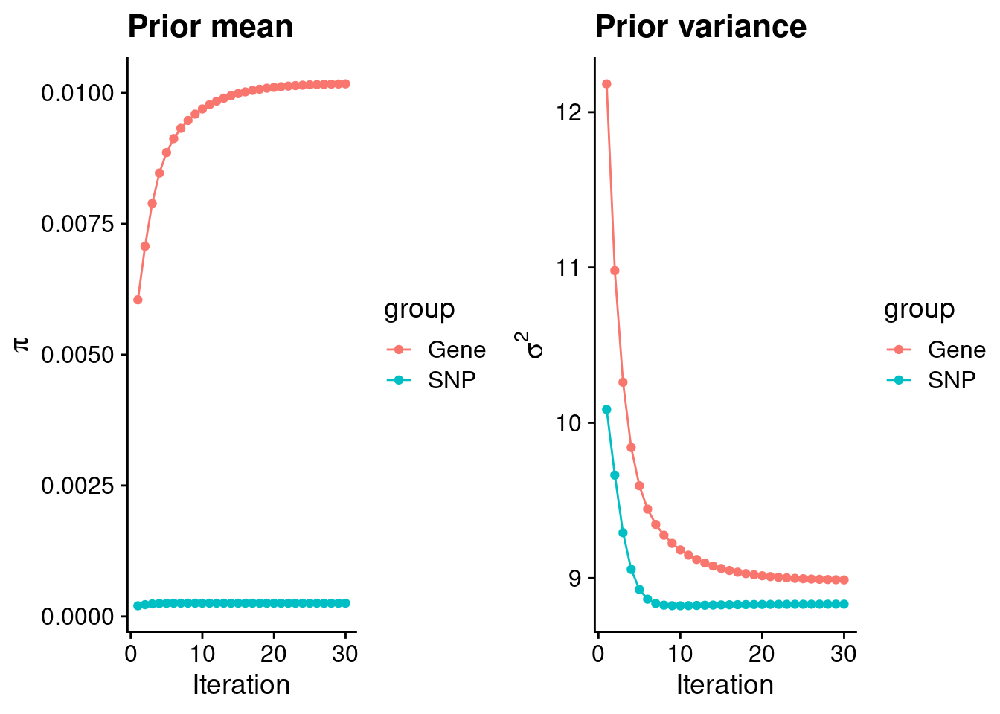
| Version | Author | Date |
|---|---|---|
| ff6403a | sq-96 | 2022-02-27 |
#estimated group prior
estimated_group_prior <- group_prior_rec[,ncol(group_prior_rec)]
names(estimated_group_prior) <- c("gene", "snp")
estimated_group_prior["snp"] <- estimated_group_prior["snp"]*thin #adjust parameter to account for thin argument
print(estimated_group_prior) gene snp
0.0101748 0.0002529 #estimated group prior variance
estimated_group_prior_var <- group_prior_var_rec[,ncol(group_prior_var_rec)]
names(estimated_group_prior_var) <- c("gene", "snp")
print(estimated_group_prior_var) gene snp
8.988 8.832 #report sample size
print(sample_size)[1] 82315#report group size
group_size <- c(nrow(ctwas_gene_res), n_snps)
print(group_size)[1] 11507 7573890#estimated group PVE
estimated_group_pve <- estimated_group_prior_var*estimated_group_prior*group_size/sample_size #check PVE calculation
names(estimated_group_pve) <- c("gene", "snp")
print(estimated_group_pve) gene snp
0.01278 0.20549 #compare sum(PIP*mu2/sample_size) with above PVE calculation
c(sum(ctwas_gene_res$PVE),sum(ctwas_snp_res$PVE))[1] 0.07922 1.52765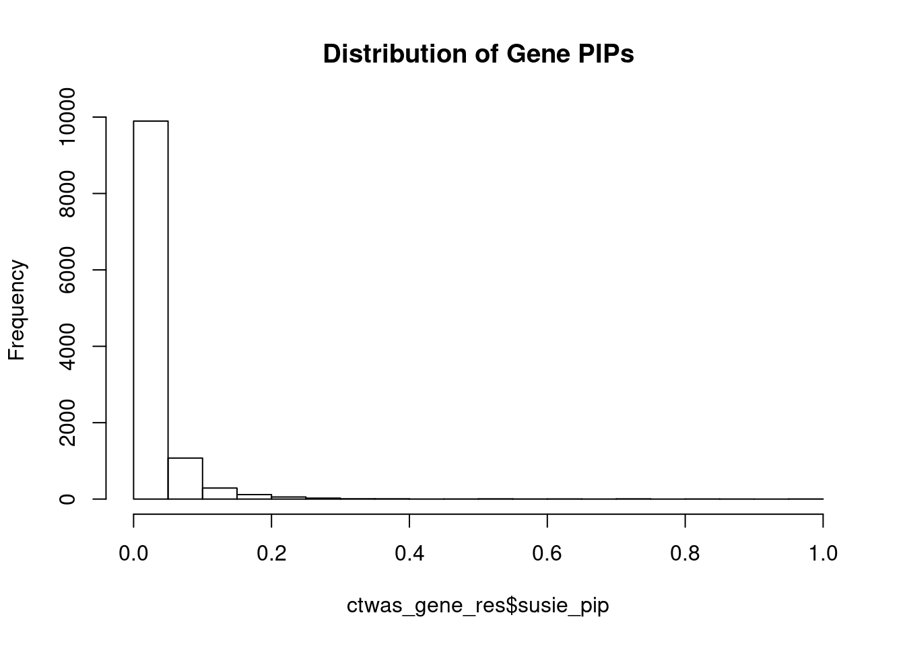
| Version | Author | Date |
|---|---|---|
| ff6403a | sq-96 | 2022-02-27 |
genename region_tag susie_pip mu2 PVE z num_eqtl
13483 RP11-230C9.4 6_102 0.9873 24.01 0.0002879 -4.866 2
7629 THOC7 3_43 0.9813 34.05 0.0004059 -6.066 2
11134 ZNF823 19_10 0.9749 29.06 0.0003441 5.468 2
12304 AC012074.2 2_15 0.8746 21.96 0.0002333 4.623 1
10221 ACOT1 14_34 0.8412 22.58 0.0002308 4.284 3
9133 MAP3K11 11_36 0.8338 23.52 0.0002382 -4.544 1
108 ELAC2 17_11 0.8056 21.71 0.0002124 4.542 1
6584 TADA1 1_82 0.7488 23.41 0.0002130 -4.174 2
3758 BHLHE41 12_18 0.7421 22.88 0.0002063 4.024 1
6336 ARFGAP2 11_29 0.7316 23.92 0.0002126 4.740 1
6470 PLBD2 12_68 0.7284 20.64 0.0001827 3.986 1
9457 LPCAT4 15_10 0.7113 20.24 0.0001749 -4.205 2
14019 ERICD 8_92 0.7082 21.16 0.0001821 -4.157 1
6317 CNNM2 10_66 0.6998 48.44 0.0004117 -8.902 2
9024 FUT9 6_65 0.6687 29.04 0.0002360 5.427 1
12293 AC073283.4 2_30 0.6190 20.75 0.0001561 -3.969 2
491 TRAPPC3 1_22 0.6176 23.44 0.0001759 4.907 1
733 PPP2R5B 11_36 0.6117 24.40 0.0001813 -4.623 1
4755 SOX5 12_17 0.6076 25.53 0.0001884 3.966 1
7965 GTF2A1 14_39 0.5965 20.91 0.0001515 -4.352 1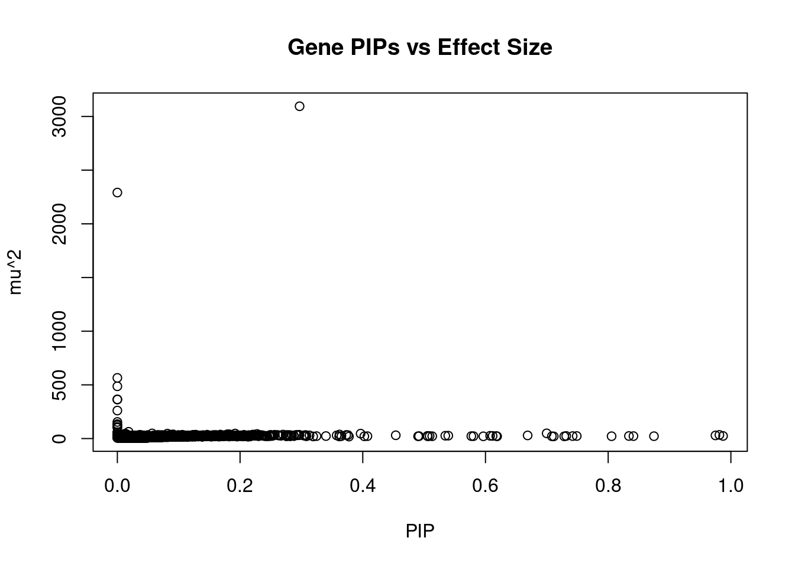
| Version | Author | Date |
|---|---|---|
| ff6403a | sq-96 | 2022-02-27 |
genename region_tag susie_pip mu2 PVE z num_eqtl
3530 CRHR1 17_27 2.970e-01 3095.21 1.117e-02 -3.36232 1
7121 ARHGAP27 17_27 0.000e+00 2291.37 0.000e+00 -2.08012 1
11430 HLA-DOA 6_26 6.350e-14 565.12 4.360e-16 6.84691 1
10942 HLA-DQA1 6_26 1.136e-13 486.81 6.717e-16 1.95455 1
10825 HLA-DRB1 6_26 1.346e-13 364.90 5.965e-16 -1.49219 1
11728 CLIC1 6_26 7.577e-13 363.20 3.343e-15 8.81238 2
11464 MSH5 6_26 6.363e-13 260.67 2.015e-15 7.40963 2
12571 C4A 6_26 1.336e-12 154.49 2.508e-15 5.29092 1
5338 PRDM5 4_78 0.000e+00 134.51 0.000e+00 0.06252 1
10287 FMNL1 17_27 0.000e+00 123.57 0.000e+00 0.66376 1
9925 ACBD4 17_27 0.000e+00 108.05 0.000e+00 0.26990 2
5014 NMT1 17_27 0.000e+00 100.35 0.000e+00 2.52018 2
10493 BTN3A2 6_20 1.836e-02 62.84 1.401e-05 8.94434 2
9090 DCAKD 17_27 0.000e+00 58.82 0.000e+00 -0.72756 1
2463 GOSR2 17_27 0.000e+00 56.03 0.000e+00 -3.44243 2
8482 TNXB 6_26 1.119e-13 55.82 7.589e-17 3.42145 1
6317 CNNM2 10_66 6.998e-01 48.44 4.117e-04 -8.90156 2
2871 PRSS16 6_21 5.667e-02 47.78 3.290e-05 -7.60149 1
13323 LINC01415 18_30 1.919e-01 46.63 1.087e-04 -5.32426 1
13051 RP11-490G2.2 1_60 1.276e-02 46.39 7.190e-06 7.32158 1 genename region_tag susie_pip mu2 PVE z num_eqtl
3530 CRHR1 17_27 0.2970 3095.21 0.0111688 -3.362 1
6317 CNNM2 10_66 0.6998 48.44 0.0004117 -8.902 2
7629 THOC7 3_43 0.9813 34.05 0.0004059 -6.066 2
11134 ZNF823 19_10 0.9749 29.06 0.0003441 5.468 2
13483 RP11-230C9.4 6_102 0.9873 24.01 0.0002879 -4.866 2
9133 MAP3K11 11_36 0.8338 23.52 0.0002382 -4.544 1
9024 FUT9 6_65 0.6687 29.04 0.0002360 5.427 1
12304 AC012074.2 2_15 0.8746 21.96 0.0002333 4.623 1
10221 ACOT1 14_34 0.8412 22.58 0.0002308 4.284 3
1619 ZC3H7B 22_17 0.3965 45.66 0.0002200 5.015 3
6584 TADA1 1_82 0.7488 23.41 0.0002130 -4.174 2
6336 ARFGAP2 11_29 0.7316 23.92 0.0002126 4.740 1
108 ELAC2 17_11 0.8056 21.71 0.0002124 4.542 1
3758 BHLHE41 12_18 0.7421 22.88 0.0002063 4.024 1
4755 SOX5 12_17 0.6076 25.53 0.0001884 3.966 1
6470 PLBD2 12_68 0.7284 20.64 0.0001827 3.986 1
14019 ERICD 8_92 0.7082 21.16 0.0001821 -4.157 1
733 PPP2R5B 11_36 0.6117 24.40 0.0001813 -4.623 1
491 TRAPPC3 1_22 0.6176 23.44 0.0001759 4.907 1
748 ATP1B3 3_87 0.5394 26.72 0.0001751 3.663 1 genename region_tag susie_pip mu2 PVE z num_eqtl
10493 BTN3A2 6_20 1.836e-02 62.84 1.401e-05 8.944 2
6317 CNNM2 10_66 6.998e-01 48.44 4.117e-04 -8.902 2
11728 CLIC1 6_26 7.577e-13 363.20 3.343e-15 8.812 2
7067 ZSCAN12 6_22 1.489e-02 41.30 7.471e-06 -8.008 1
939 NT5C2 10_66 2.700e-01 37.11 1.217e-04 7.804 1
2871 PRSS16 6_21 5.667e-02 47.78 3.290e-05 -7.601 1
11464 MSH5 6_26 6.363e-13 260.67 2.015e-15 7.410 2
13051 RP11-490G2.2 1_60 1.276e-02 46.39 7.190e-06 7.322 1
11430 HLA-DOA 6_26 6.350e-14 565.12 4.360e-16 6.847 1
10634 ZSCAN23 6_22 8.161e-02 45.53 4.514e-05 -6.793 1
9986 ARL6IP4 12_75 7.424e-03 38.54 3.476e-06 6.491 1
12308 ZSCAN31 6_22 2.258e-02 29.34 8.050e-06 -6.446 2
6452 ABCB9 12_75 6.069e-03 37.31 2.751e-06 6.404 1
10988 ZSCAN26 6_22 1.391e-02 33.86 5.721e-06 6.349 3
6407 TAOK2 16_24 3.620e-01 37.85 1.665e-04 6.300 1
9343 ATG13 11_28 2.963e-01 35.09 1.263e-04 -6.169 1
11633 DNAJC19 3_111 2.203e-01 36.38 9.736e-05 6.158 1
11089 NMB 15_39 1.795e-01 40.21 8.768e-05 6.132 1
7629 THOC7 3_43 9.813e-01 34.05 4.059e-04 -6.066 2
8634 INO80E 16_24 1.278e-01 36.26 5.630e-05 6.051 2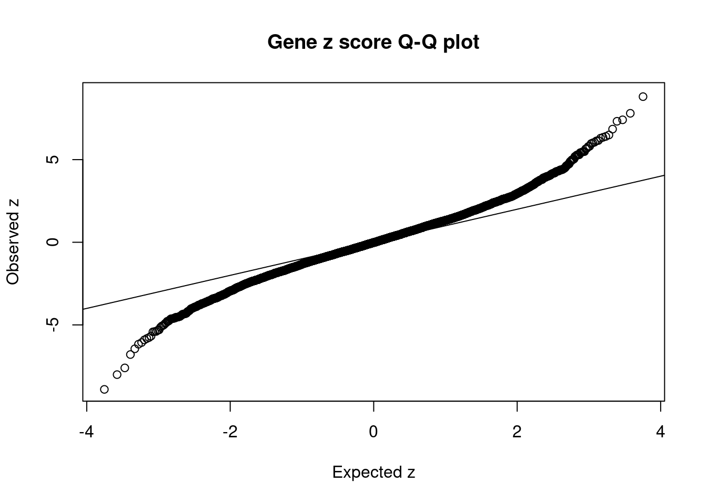
| Version | Author | Date |
|---|---|---|
| ff6403a | sq-96 | 2022-02-27 |
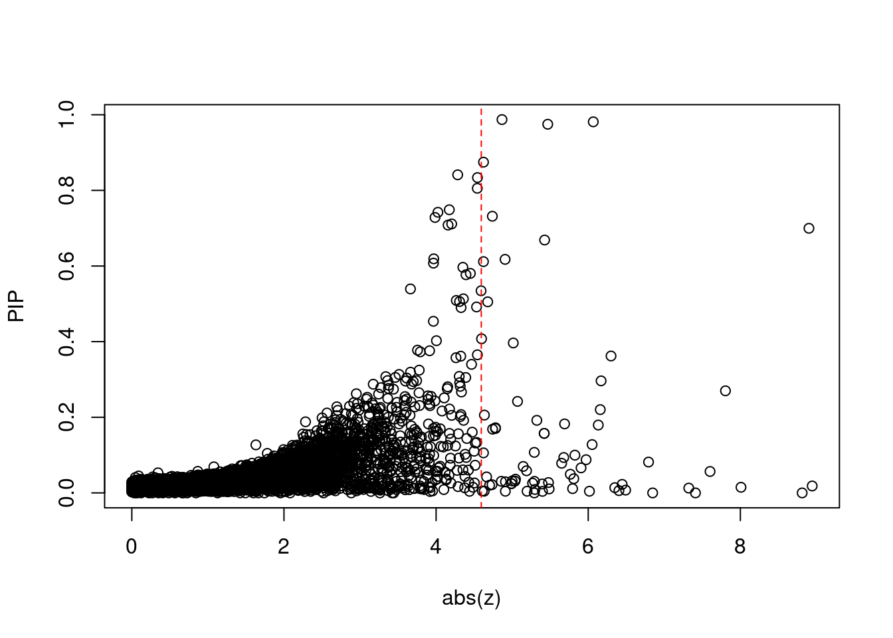
| Version | Author | Date |
|---|---|---|
| ff6403a | sq-96 | 2022-02-27 |
[1] 0.006431 genename region_tag susie_pip mu2 PVE z num_eqtl
10493 BTN3A2 6_20 1.836e-02 62.84 1.401e-05 8.944 2
6317 CNNM2 10_66 6.998e-01 48.44 4.117e-04 -8.902 2
11728 CLIC1 6_26 7.577e-13 363.20 3.343e-15 8.812 2
7067 ZSCAN12 6_22 1.489e-02 41.30 7.471e-06 -8.008 1
939 NT5C2 10_66 2.700e-01 37.11 1.217e-04 7.804 1
2871 PRSS16 6_21 5.667e-02 47.78 3.290e-05 -7.601 1
11464 MSH5 6_26 6.363e-13 260.67 2.015e-15 7.410 2
13051 RP11-490G2.2 1_60 1.276e-02 46.39 7.190e-06 7.322 1
11430 HLA-DOA 6_26 6.350e-14 565.12 4.360e-16 6.847 1
10634 ZSCAN23 6_22 8.161e-02 45.53 4.514e-05 -6.793 1
9986 ARL6IP4 12_75 7.424e-03 38.54 3.476e-06 6.491 1
12308 ZSCAN31 6_22 2.258e-02 29.34 8.050e-06 -6.446 2
6452 ABCB9 12_75 6.069e-03 37.31 2.751e-06 6.404 1
10988 ZSCAN26 6_22 1.391e-02 33.86 5.721e-06 6.349 3
6407 TAOK2 16_24 3.620e-01 37.85 1.665e-04 6.300 1
9343 ATG13 11_28 2.963e-01 35.09 1.263e-04 -6.169 1
11633 DNAJC19 3_111 2.203e-01 36.38 9.736e-05 6.158 1
11089 NMB 15_39 1.795e-01 40.21 8.768e-05 6.132 1
7629 THOC7 3_43 9.813e-01 34.05 4.059e-04 -6.066 2
8634 INO80E 16_24 1.278e-01 36.26 5.630e-05 6.051 2#number of genes for gene set enrichment
length(genes)[1] 28Uploading data to Enrichr... Done.
Querying GO_Biological_Process_2021... Done.
Querying GO_Cellular_Component_2021... Done.
Querying GO_Molecular_Function_2021... Done.
Parsing results... Done.
[1] "GO_Biological_Process_2021"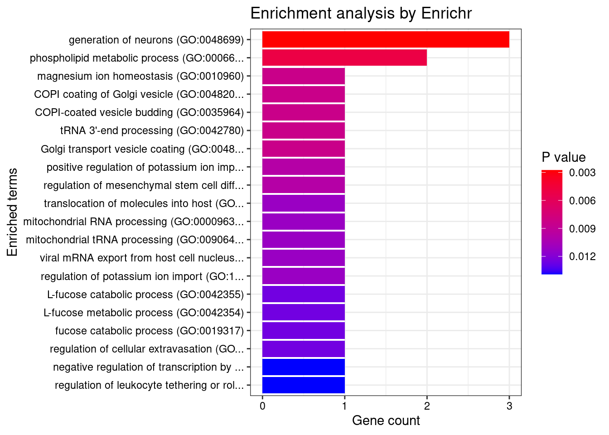
| Version | Author | Date |
|---|---|---|
| ff6403a | sq-96 | 2022-02-27 |
[1] Term Overlap Adjusted.P.value Genes
<0 rows> (or 0-length row.names)
[1] "GO_Cellular_Component_2021"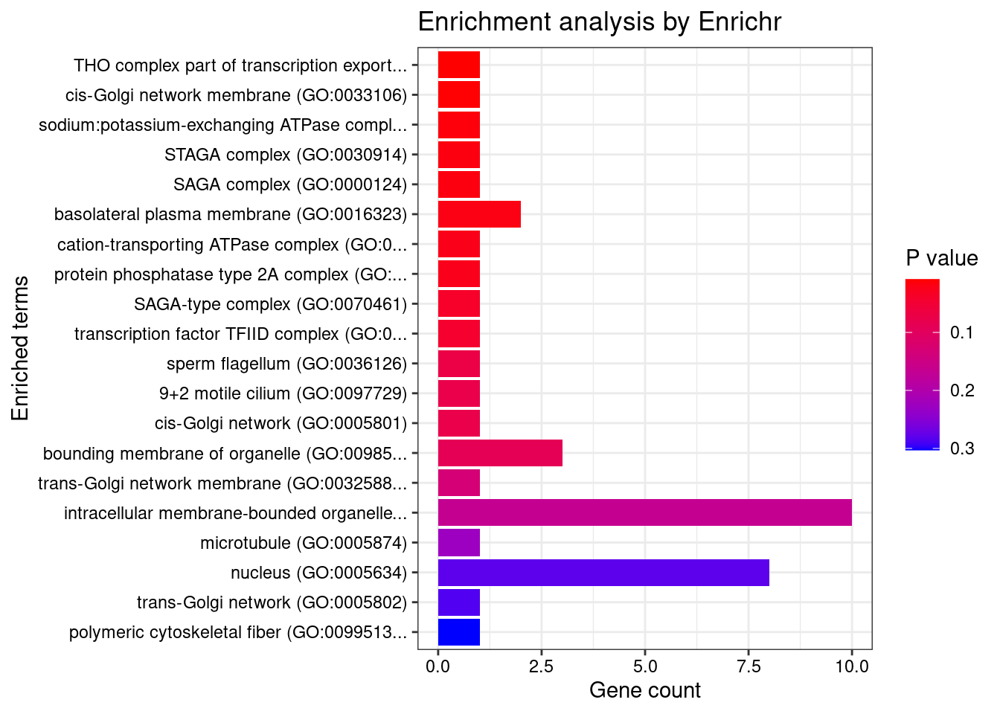
| Version | Author | Date |
|---|---|---|
| ff6403a | sq-96 | 2022-02-27 |
[1] Term Overlap Adjusted.P.value Genes
<0 rows> (or 0-length row.names)
[1] "GO_Molecular_Function_2021"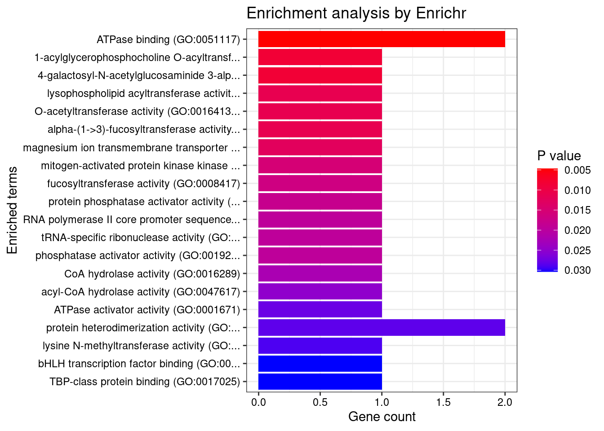
| Version | Author | Date |
|---|---|---|
| ff6403a | sq-96 | 2022-02-27 |
[1] Term Overlap Adjusted.P.value Genes
<0 rows> (or 0-length row.names) Description FDR Ratio BgRatio
21 Spasmophilia 0.0055 1/9 1/9703
24 Tetany 0.0055 1/9 1/9703
31 Tetany, Neonatal 0.0055 1/9 1/9703
56 Tetanilla 0.0055 1/9 1/9703
63 SENIOR-LOKEN SYNDROME 7 0.0055 1/9 1/9703
64 HYPOMAGNESEMIA 6, RENAL 0.0055 1/9 1/9703
67 PROSTATE CANCER, HEREDITARY, 2 0.0055 1/9 1/9703
68 SPASTIC PARAPLEGIA 53, AUTOSOMAL RECESSIVE 0.0055 1/9 1/9703
70 COMBINED OXIDATIVE PHOSPHORYLATION DEFICIENCY 17 0.0055 1/9 1/9703
71 BARDET-BIEDL SYNDROME 16 0.0055 1/9 1/9703Loading the functional categories...
Loading the ID list...
Loading the reference list...
Performing the enrichment analysis...Warning in oraEnrichment(interestGeneList, referenceGeneList, geneSet, minNum =
minNum, : No significant gene set is identified based on FDR 0.05!NULL#number of genes in known annotations
print(length(known_annotations))[1] 130#number of genes in known annotations with imputed expression
print(sum(known_annotations %in% ctwas_gene_res$genename))[1] 64#significance threshold for TWAS
print(sig_thresh)[1] 4.594#number of ctwas genes
length(ctwas_genes)[1] 7#number of TWAS genes
length(twas_genes)[1] 74#show novel genes (ctwas genes with not in TWAS genes)
ctwas_gene_res[ctwas_gene_res$genename %in% novel_genes,report_cols] genename region_tag susie_pip mu2 PVE z num_eqtl
9133 MAP3K11 11_36 0.8338 23.52 0.0002382 -4.544 1
10221 ACOT1 14_34 0.8412 22.58 0.0002308 4.284 3
108 ELAC2 17_11 0.8056 21.71 0.0002124 4.542 1#sensitivity / recall
print(sensitivity) ctwas TWAS
0.02308 0.06154 #specificity
print(specificity) ctwas TWAS
0.9997 0.9942 #precision / PPV
print(precision) ctwas TWAS
0.4286 0.1081 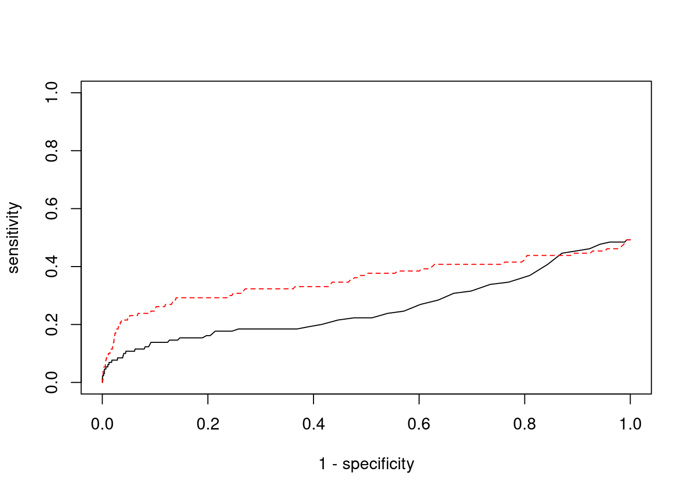
library(biomaRt)
library(GenomicRanges)Loading required package: stats4Loading required package: BiocGenericsLoading required package: parallel
Attaching package: 'BiocGenerics'The following objects are masked from 'package:parallel':
clusterApply, clusterApplyLB, clusterCall, clusterEvalQ,
clusterExport, clusterMap, parApply, parCapply, parLapply,
parLapplyLB, parRapply, parSapply, parSapplyLBThe following objects are masked from 'package:dplyr':
combine, intersect, setdiff, unionThe following objects are masked from 'package:stats':
IQR, mad, sd, var, xtabsThe following objects are masked from 'package:base':
anyDuplicated, append, as.data.frame, basename, cbind, colnames,
dirname, do.call, duplicated, eval, evalq, Filter, Find, get, grep,
grepl, intersect, is.unsorted, lapply, Map, mapply, match, mget,
order, paste, pmax, pmax.int, pmin, pmin.int, Position, rank,
rbind, Reduce, rownames, sapply, setdiff, sort, table, tapply,
union, unique, unsplit, which, which.max, which.minLoading required package: S4Vectors
Attaching package: 'S4Vectors'The following objects are masked from 'package:dplyr':
first, renameThe following object is masked from 'package:tidyr':
expandThe following object is masked from 'package:base':
expand.gridLoading required package: IRanges
Attaching package: 'IRanges'The following objects are masked from 'package:dplyr':
collapse, desc, sliceThe following object is masked from 'package:purrr':
reduceLoading required package: GenomeInfoDb#
ensembl <- useEnsembl(biomart="ENSEMBL_MART_ENSEMBL", dataset="hsapiens_gene_ensembl")
G_list <- getBM(filters= "chromosome_name", attributes = c("hgnc_symbol","chromosome_name","start_position","end_position","gene_biotype"), values=1:22, mart=ensembl)
G_list <- G_list[G_list$hgnc_symbol!="",]
G_list <- G_list[G_list$gene_biotype %in% c("protein_coding","lncRNA"),]
G_list$start <- G_list$start_position
G_list$end <- G_list$end_position
G_list_granges <- makeGRangesFromDataFrame(G_list, keep.extra.columns=T)
#
# #remove genes without imputed expression from gene lists
known_annotations <- known_annotations[known_annotations %in% ctwas_gene_res$genename]
#
known_annotations_positions <- G_list[G_list$hgnc_symbol %in% known_annotations,]
half_window <- 1000000
known_annotations_positions$start <- known_annotations_positions$start_position - half_window
known_annotations_positions$end <- known_annotations_positions$end_position + half_window
known_annotations_positions$start[known_annotations_positions$start<1] <- 1
known_annotations_granges <- makeGRangesFromDataFrame(known_annotations_positions, keep.extra.columns=T)
#
bystanders <- findOverlaps(known_annotations_granges,G_list_granges)
bystanders <- unique(subjectHits(bystanders))
bystanders <- G_list$hgnc_symbol[bystanders]
bystanders <- unique(bystanders[!(bystanders %in% known_annotations)])
unrelated_genes <- bystanders
#
# #save gene lists
save(known_annotations, file=paste0(results_dir, "/known_annotations.Rd"))
save(unrelated_genes, file=paste0(results_dir, "/bystanders.Rd"))
load(paste0(results_dir, "/known_annotations.Rd"))
load(paste0(results_dir, "/bystanders.Rd"))
#remove genes without imputed expression from bystander list
unrelated_genes <- unrelated_genes[unrelated_genes %in% ctwas_gene_res$genename]
#number of genes in known annotations (with imputed expression)
print(length(known_annotations))[1] 64#subset results to genes in known annotations or bystanders
ctwas_gene_res_subset <- ctwas_gene_res[ctwas_gene_res$genename %in% c(known_annotations, unrelated_genes),]
#assign ctwas and TWAS genes
ctwas_genes <- ctwas_gene_res_subset$genename[ctwas_gene_res_subset$susie_pip>0.8]
twas_genes <- ctwas_gene_res_subset$genename[abs(ctwas_gene_res_subset$z)>sig_thresh]
#significance threshold for TWAS
print(sig_thresh)[1] 4.594#number of ctwas genes (in known annotations or bystanders)
length(ctwas_genes)[1] 4#number of TWAS genes (in known annotations or bystanders)
length(twas_genes)[1] 25#sensitivity / recall
sensitivity <- rep(NA,2)
names(sensitivity) <- c("ctwas", "TWAS")
sensitivity["ctwas"] <- sum(ctwas_genes %in% known_annotations)/length(known_annotations)
sensitivity["TWAS"] <- sum(twas_genes %in% known_annotations)/length(known_annotations)
sensitivity ctwas TWAS
0.04688 0.12500 #specificity / (1 - False Positive Rate)
specificity <- rep(NA,2)
names(specificity) <- c("ctwas", "TWAS")
specificity["ctwas"] <- sum(!(unrelated_genes %in% ctwas_genes))/length(unrelated_genes)
specificity["TWAS"] <- sum(!(unrelated_genes %in% twas_genes))/length(unrelated_genes)
specificity ctwas TWAS
0.9989 0.9807 #precision / PPV / (1 - False Discovery Rate)
precision <- rep(NA,2)
names(precision) <- c("ctwas", "TWAS")
precision["ctwas"] <- sum(ctwas_genes %in% known_annotations)/length(ctwas_genes)
precision["TWAS"] <- sum(twas_genes %in% known_annotations)/length(twas_genes)
precisionctwas TWAS
0.75 0.32 #store sensitivity and specificity calculations for plots
sensitivity_plot <- sensitivity
specificity_plot <- specificity
#precision / PPV by PIP bin
pip_range <- c(0.2, 0.4, 0.6, 0.8, 1)
precision_range <- rep(NA, length(pip_range))
for (i in 1:length(pip_range)){
pip_upper <- pip_range[i]
if (i==1){
pip_lower <- 0
} else {
pip_lower <- pip_range[i-1]
}
#assign ctwas genes in PIP bin
ctwas_genes <- ctwas_gene_res_subset$genename[ctwas_gene_res_subset$susie_pip>=pip_lower & ctwas_gene_res_subset$susie_pip<pip_upper]
precision_range[i] <- sum(ctwas_genes %in% known_annotations)/length(ctwas_genes)
}
names(precision_range) <- paste(c(0, pip_range[-length(pip_range)]), pip_range,sep=" - ")
barplot(precision_range, ylim=c(0,1), main="Precision by PIP Range", xlab="PIP Range", ylab="Precision")
abline(h=0.2, lty=2)
abline(h=0.4, lty=2)
abline(h=0.6, lty=2)
abline(h=0.8, lty=2)
barplot(precision_range, add=T, col="darkgrey")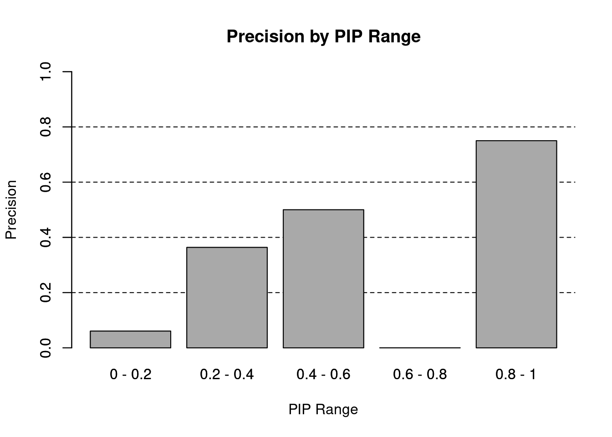
#precision / PPV by PIP threshold
#pip_range <- c(0.2, 0.4, 0.6, 0.8, 1)
pip_range <- c(0.5, 0.8, 1)
precision_range <- rep(NA, length(pip_range))
number_detected <- rep(NA, length(pip_range))
for (i in 1:length(pip_range)){
pip_upper <- pip_range[i]
if (i==1){
pip_lower <- 0
} else {
pip_lower <- pip_range[i-1]
}
#assign ctwas genes using PIP threshold
ctwas_genes <- ctwas_gene_res_subset$genename[ctwas_gene_res_subset$susie_pip>=pip_lower]
number_detected[i] <- length(ctwas_genes)
precision_range[i] <- sum(ctwas_genes %in% known_annotations)/length(ctwas_genes)
}
names(precision_range) <- paste0(">= ", c(0, pip_range[-length(pip_range)]))
precision_range <- precision_range*100
precision_range <- c(precision_range, precision["TWAS"]*100)
names(precision_range)[4] <- "TWAS Bonferroni"
number_detected <- c(number_detected, length(twas_genes))
barplot(precision_range, ylim=c(0,100), main="Precision for Distinguishing Silver Standard and Bystander Genes", xlab="PIP Threshold for Detection", ylab="% of Detected Genes in Silver Standard")
abline(h=20, lty=2)
abline(h=40, lty=2)
abline(h=60, lty=2)
abline(h=80, lty=2)
xx <- barplot(precision_range, add=T, col=c(rep("darkgrey",3), "white"))
text(x = xx, y = rep(0, length(number_detected)), label = paste0(number_detected, " detected"), pos = 3, cex=0.8)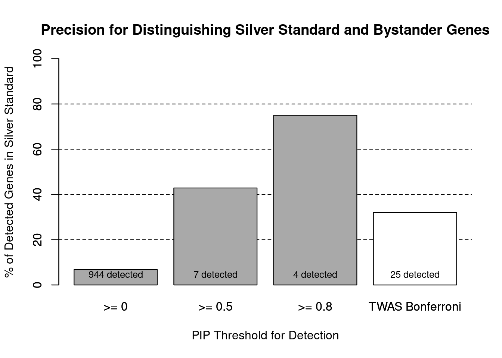
#text(x = xx, y = precision_range, label = paste0(round(precision_range,1), "%"), pos = 3, cex=0.8, offset = 1.5)
#false discovery rate by PIP threshold
barplot(100-precision_range, ylim=c(0,100), main="False Discovery Rate for Distinguishing Silver Standard and Bystander Genes", xlab="PIP Threshold for Detection", ylab="% Bystanders in Detected Genes")
abline(h=20, lty=2)
abline(h=40, lty=2)
abline(h=60, lty=2)
abline(h=80, lty=2)
xx <- barplot(100-precision_range, add=T, col=c(rep("darkgrey",3), "white"))
text(x = xx, y = rep(0, length(number_detected)), label = paste0(number_detected, " detected"), pos = 3, cex=0.8)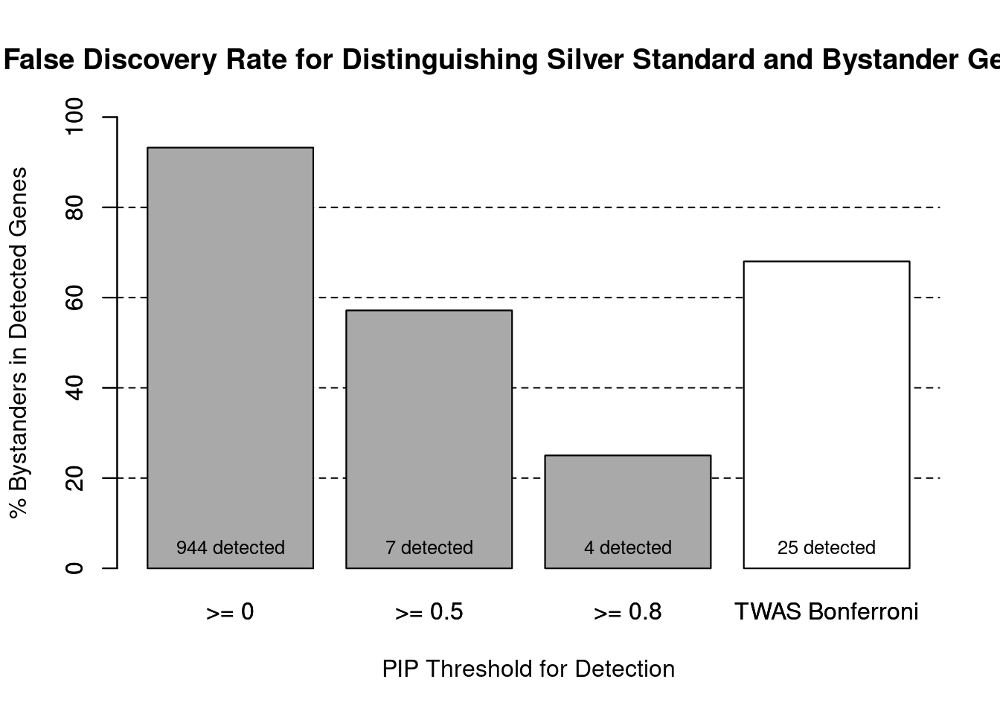
#text(x = xx, y = precision_range, label = paste0(round(precision_range,1), "%"), pos = 3, cex=0.8, offset = 1.5)
#ROC curves
pip_range <- (0:1000)/1000
sensitivity <- rep(NA, length(pip_range))
specificity <- rep(NA, length(pip_range))
for (index in 1:length(pip_range)){
pip <- pip_range[index]
ctwas_genes <- ctwas_gene_res_subset$genename[ctwas_gene_res_subset$susie_pip>=pip]
sensitivity[index] <- sum(ctwas_genes %in% known_annotations)/length(known_annotations)
specificity[index] <- sum(!(unrelated_genes %in% ctwas_genes))/length(unrelated_genes)
}
plot(1-specificity, sensitivity, type="l", xlim=c(0,1), ylim=c(0,1), main="", xlab="1 - Specificity", ylab="Sensitivity")
title(expression("ROC Curve for cTWAS (black) and TWAS (" * phantom("red") * ")"))
title(expression(phantom("ROC Curve for cTWAS (black) and TWAS (") * "red" * phantom(")")), col.main="red")
sig_thresh_range <- seq(from=0, to=max(abs(ctwas_gene_res_subset$z)), length.out=length(pip_range))
for (index in 1:length(sig_thresh_range)){
sig_thresh_plot <- sig_thresh_range[index]
twas_genes <- ctwas_gene_res_subset$genename[abs(ctwas_gene_res_subset$z)>=sig_thresh_plot]
sensitivity[index] <- sum(twas_genes %in% known_annotations)/length(known_annotations)
specificity[index] <- sum(!(unrelated_genes %in% twas_genes))/length(unrelated_genes)
}
lines(1-specificity, sensitivity, xlim=c(0,1), ylim=c(0,1), col="red", lty=1)
abline(a=0,b=1,lty=3)
#add previously computed points from the analysis
ctwas_genes <- ctwas_gene_res_subset$genename[ctwas_gene_res_subset$susie_pip>0.8]
twas_genes <- ctwas_gene_res_subset$genename[abs(ctwas_gene_res_subset$z)>sig_thresh]
points(1-specificity_plot["ctwas"], sensitivity_plot["ctwas"], pch=21, bg="black")
points(1-specificity_plot["TWAS"], sensitivity_plot["TWAS"], pch=21, bg="red")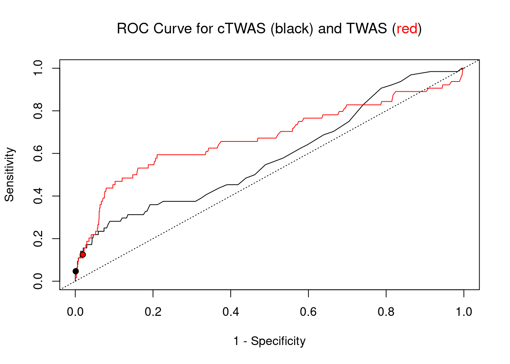
sessionInfo()R version 3.6.1 (2019-07-05)
Platform: x86_64-pc-linux-gnu (64-bit)
Running under: Scientific Linux 7.4 (Nitrogen)
Matrix products: default
BLAS/LAPACK: /software/openblas-0.2.19-el7-x86_64/lib/libopenblas_haswellp-r0.2.19.so
locale:
[1] LC_CTYPE=en_US.UTF-8 LC_NUMERIC=C
[3] LC_TIME=en_US.UTF-8 LC_COLLATE=en_US.UTF-8
[5] LC_MONETARY=en_US.UTF-8 LC_MESSAGES=en_US.UTF-8
[7] LC_PAPER=en_US.UTF-8 LC_NAME=C
[9] LC_ADDRESS=C LC_TELEPHONE=C
[11] LC_MEASUREMENT=en_US.UTF-8 LC_IDENTIFICATION=C
attached base packages:
[1] parallel stats4 stats graphics grDevices utils datasets
[8] methods base
other attached packages:
[1] GenomicRanges_1.36.1 GenomeInfoDb_1.20.0 IRanges_2.18.1
[4] S4Vectors_0.22.1 BiocGenerics_0.30.0 biomaRt_2.40.1
[7] readxl_1.3.1 forcats_0.5.1 stringr_1.4.0
[10] dplyr_1.0.7 purrr_0.3.4 readr_2.1.1
[13] tidyr_1.1.4 tidyverse_1.3.1 tibble_3.1.6
[16] WebGestaltR_0.4.4 disgenet2r_0.99.2 enrichR_3.0
[19] cowplot_1.0.0 ggplot2_3.3.5 workflowr_1.6.2
loaded via a namespace (and not attached):
[1] ggbeeswarm_0.6.0 colorspace_2.0-2 rjson_0.2.20
[4] ellipsis_0.3.2 rprojroot_2.0.2 XVector_0.24.0
[7] fs_1.5.2 rstudioapi_0.13 farver_2.1.0
[10] ggrepel_0.9.1 bit64_4.0.5 AnnotationDbi_1.46.0
[13] fansi_1.0.2 lubridate_1.8.0 xml2_1.3.3
[16] codetools_0.2-16 doParallel_1.0.17 cachem_1.0.6
[19] knitr_1.36 jsonlite_1.7.2 apcluster_1.4.8
[22] Cairo_1.5-12.2 broom_0.7.10 dbplyr_2.1.1
[25] compiler_3.6.1 httr_1.4.2 backports_1.4.1
[28] assertthat_0.2.1 Matrix_1.2-18 fastmap_1.1.0
[31] cli_3.1.0 later_0.8.0 prettyunits_1.1.1
[34] htmltools_0.5.2 tools_3.6.1 igraph_1.2.10
[37] GenomeInfoDbData_1.2.1 gtable_0.3.0 glue_1.6.2
[40] reshape2_1.4.4 doRNG_1.8.2 Rcpp_1.0.8
[43] Biobase_2.44.0 cellranger_1.1.0 jquerylib_0.1.4
[46] vctrs_0.3.8 svglite_1.2.2 iterators_1.0.14
[49] xfun_0.29 rvest_1.0.2 lifecycle_1.0.1
[52] rngtools_1.5.2 XML_3.99-0.3 zlibbioc_1.30.0
[55] scales_1.1.1 vroom_1.5.7 hms_1.1.1
[58] promises_1.0.1 yaml_2.2.1 curl_4.3.2
[61] memoise_2.0.1 ggrastr_1.0.1 gdtools_0.1.9
[64] stringi_1.7.6 RSQLite_2.2.8 highr_0.9
[67] foreach_1.5.2 rlang_1.0.1 pkgconfig_2.0.3
[70] bitops_1.0-7 evaluate_0.14 lattice_0.20-38
[73] labeling_0.4.2 bit_4.0.4 tidyselect_1.1.1
[76] plyr_1.8.6 magrittr_2.0.2 R6_2.5.1
[79] generics_0.1.1 DBI_1.1.2 pillar_1.6.4
[82] haven_2.4.3 whisker_0.3-2 withr_2.4.3
[85] RCurl_1.98-1.5 modelr_0.1.8 crayon_1.5.0
[88] utf8_1.2.2 tzdb_0.2.0 rmarkdown_2.11
[91] progress_1.2.2 grid_3.6.1 data.table_1.14.2
[94] blob_1.2.2 git2r_0.26.1 reprex_2.0.1
[97] digest_0.6.29 httpuv_1.5.1 munsell_0.5.0
[100] beeswarm_0.2.3 vipor_0.4.5